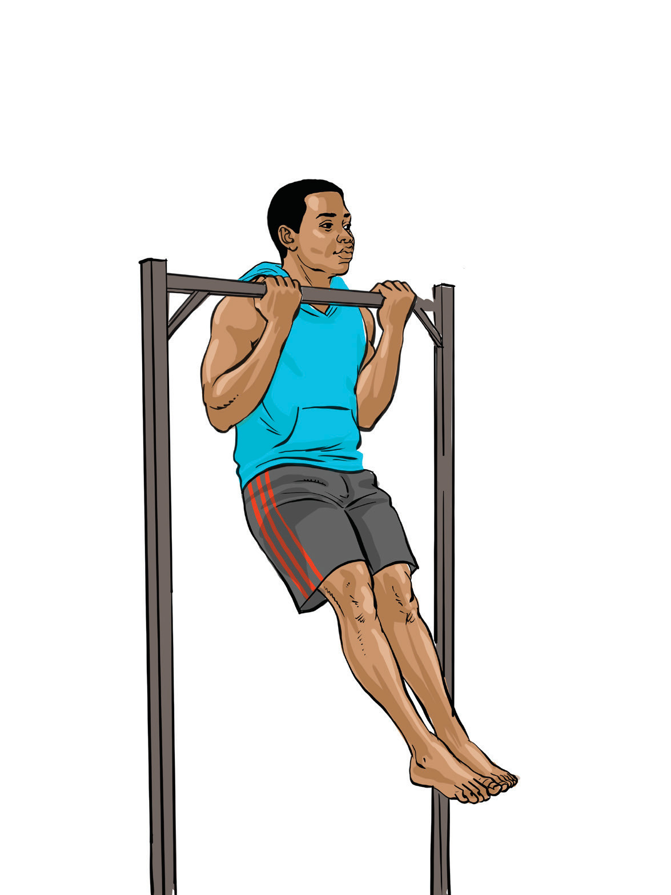

Flexed arm hang
A flexed arm hang is an upper-body strength exercise where you hang from a bar with your chin above the bar and arms flexed. It is commonly used in gymnastics to measure upper body endurance and grip strength. The following steps will help you practice the flexed arm hang:
Use a sturdy bar that allows you to hang freely without touching the ground;
Grip the bar using an overhand grip or underhand grip with hands positioned shoulder-width apart. Use a step, box, or have someone to lift you into position if you are not strong enough to pull-up to get your chin above the bar;
Keep your chin above the bar without resting it on the bar while engaging your arms, shoulders, and core to maintain the hold, Figure 4.31;
Hold on until your muscles fatigue and you can no longer maintain form, aim to increase the hang time as you get used to it. In competitions, the person who can hold the longest is usually the winner.
